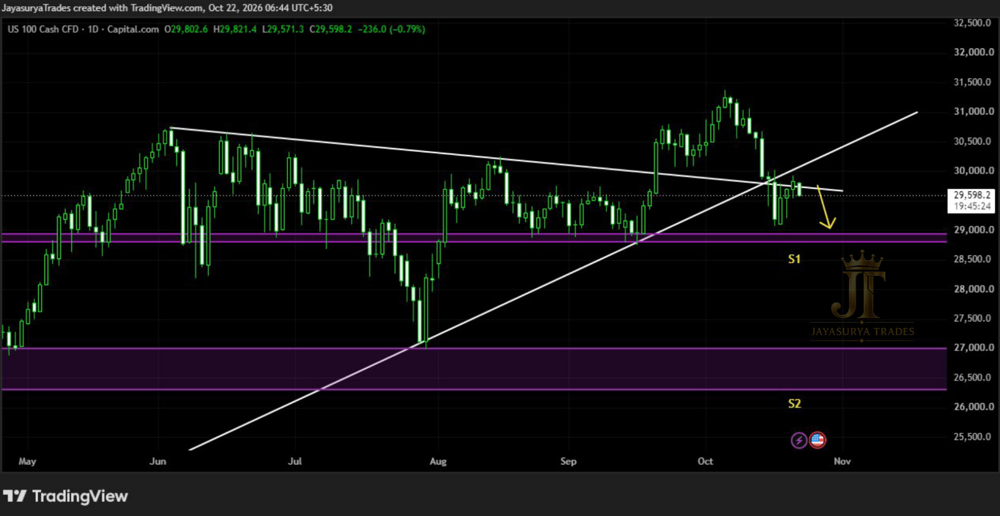

For this Thursday Market Focus, I am reviewing the Nasdaq 100. As discussed in our previous last week Thursday analysis, the market has broken out of the trend line in the daily time frame and has closed below the trend line, trapping the liquidity upwards.
The next movement of the Nasdaq 100 points toward Support 1 (S1). If the market breaks downwards at S1 and takes a retracement on S1 for the downward movement, we could expect a subsequent fall to Support 2 (S2).
Structure: Daily trend line breakout trapping liquidity upwards
Primary Target: Support 1 (S1)
Secondary Target: Support 2 (S2) on confirmed breakdown and retracement at S1
Alternative Scenario: Market returns and closes above the ascending trendline for potential buy-side movement (takes a week or so to build)
Approach: Investors watch the potential fall; intraday traders and scalpers look for high-probability sell entries on lower timeframes.

Market Update — Trend Line Liquidity Trap
The recent price behavior on the daily time frame shows that the market broke out of the trend line and subsequently closed below it. This price action has effectively trapped liquidity upwards.
Because of this structure, the bearish bias remains active toward Support 1 (S1). Investors should keep a close eye on this potential fall in the Nasdaq 100.
Key Levels to Monitor
The primary path leads down to S1, with S2 coming into play if a breakdown and retracement occur. Conversely, reclaiming the ascending trendline with a close above it would initiate a potential buy-side shift in the future.
Intraday & Scalper Strategy — Looking for Sell Entries
For those who are intraday traders and scalpers, it is better to go into lower timeframes and constantly look for high-probability sell entries. As long as market structures suggest a downtrend toward support one, following this bias aligns with current momentum.
Do not force positions; wait for proper confirmations on lower timeframes while monitoring price behavior around S1.
Alternative Bullish Scenario — Potential Buy-Side Movement
If the market comes back and closes above the ascending trend line I have marked, then we could expect a potential buy-side movement. However, that is a scenario we will intimate when the time comes in the next week, as it takes time—roughly a week or so—to develop.
Until a confirmed close above the trend line occurs, the structure remains tilted toward the downside.
Key Takeaways
- Nasdaq 100 broke out of the daily trend line and closed below it, trapping liquidity upwards.
- The next expected movement goes toward Support 1 (S1).
- If S1 breaks downwards with a subsequent retracement, a further fall to Support 2 (S2) can be expected.
- Investors should keep an eye on the potential fall in the Nasdaq 100.
- Intraday traders and scalpers should drop to lower timeframes to look for high-probability sell entries toward S1.
- A close back above the ascending trendline would signal a potential buy-side scenario, which will take a week or so to materialize and will be intimated when the time comes.
The main focus for today's Nasdaq 100 analysis is clear: respect the liquidity trap, monitor the move toward S1, and let lower timeframe structures guide execution.
Toward S1: primary bearish bias.
Break & retracement at S1: potential extension to S2.
Above ascending trendline: potential buy-side scenario to be watched next week.
One day. One market. One focused analysis.
Levels. Structure. Scenarios. Confirmation.
No hype. Just how the market behaves.
Watch. Wait. Confirm.
Risk Disclaimer
This analysis is provided for educational and informational purposes only and should not be considered financial advice or a recommendation to buy or sell any financial instrument.
Trading involves substantial risk. Always conduct your own research and follow your own trading plan and risk-management rules.